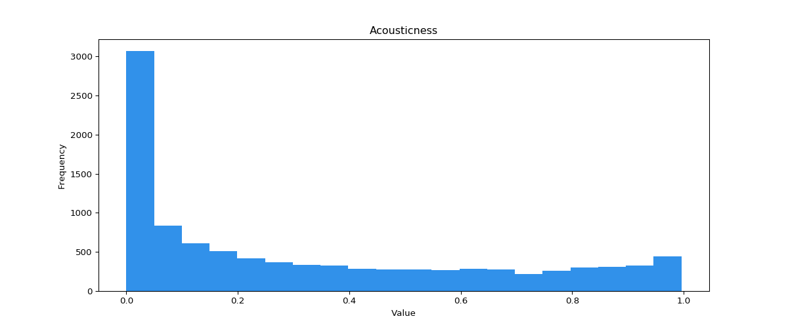
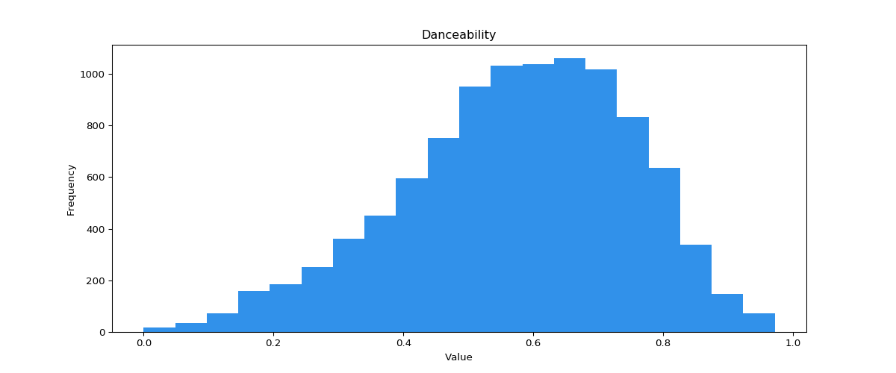
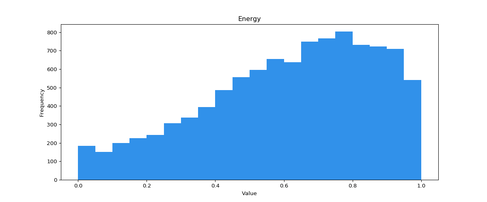
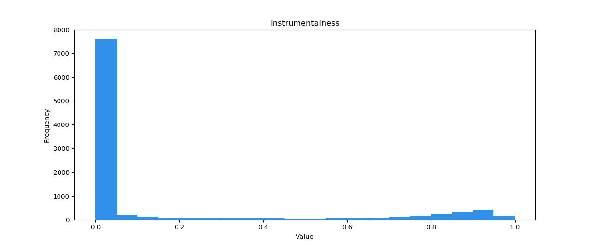
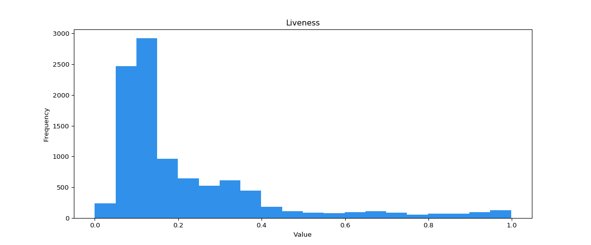
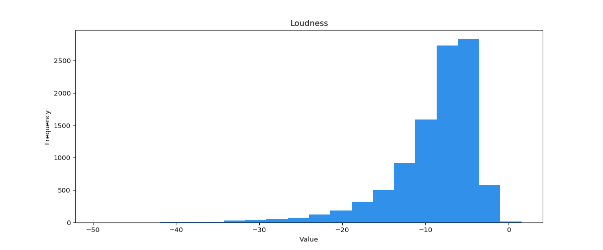
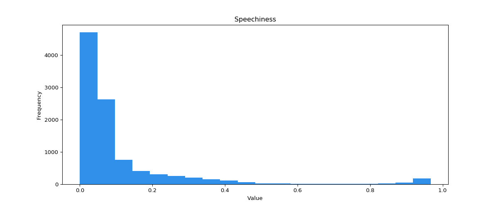
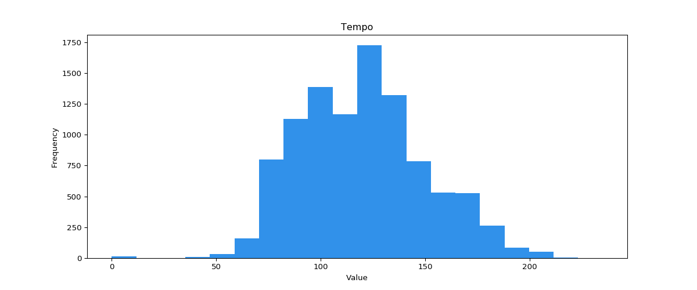
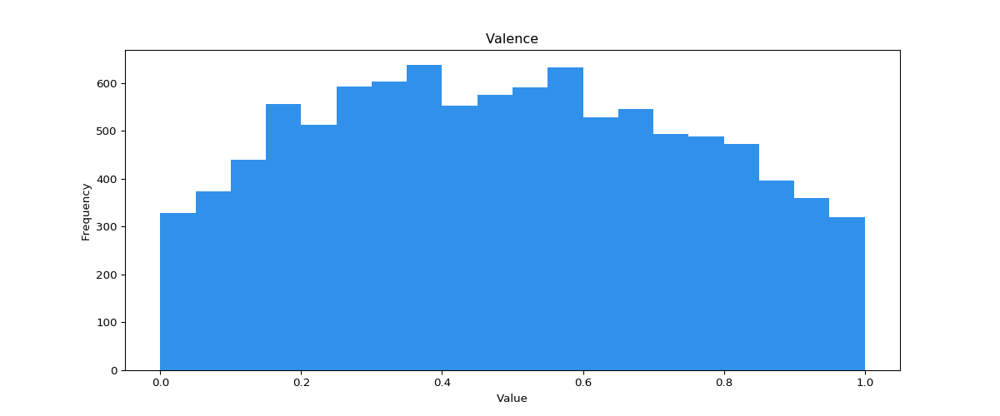

A confidence measure from 0.0 to 1.0 of whether the
track is acoustic. 1.0
represents high confidence the track is acoustic. The distribution of values for this
feature
look like this:

Danceability describes how suitable a track is for
dancing based on a combination of musical elements including tempo, rhythm stability,
beat
strength, and overall regularity. A value of 0.0 is least danceable and 1.0 is most
danceable. The distribution of values for this feature look like this:

The duration of the track in milliseconds.
Energy is a measure from 0.0 to 1.0 and represents a
perceptual measure of intensity and activity. Typically, energetic tracks feel fast,
loud,
and noisy. For example, death metal has high energy, while a Bach prelude scores low on
the
scale. Perceptual features contributing to this attribute include dynamic range,
perceived
loudness, timbre, onset rate, and general entropy. The distribution of values for this
feature look like this:

Predicts whether a track contains no
vocals. “Ooh”
and “aah” sounds are treated as instrumental in this context. Rap or spoken word tracks
are
clearly “vocal”. The closer the instrumentalness value is to 1.0, the greater likelihood
the
track contains no vocal content. Values above 0.5 are intended to represent instrumental
tracks, but confidence is higher as the value approaches 1.0. The distribution of values
for
this feature look like this:

Detects the presence of an audience in the
recording. Higher liveness values represent an increased probability that the track was
performed live. A value above 0.8 provides strong likelihood that the track is live. The
distribution of values for this feature look like this:

The overall loudness of a track in decibels (dB).
Loudness values are averaged across the entire track and are useful for comparing
relative
loudness of tracks. Loudness is the quality of a sound that is the primary psychological
correlate of physical strength (amplitude). Values typical range between -60 and 0 db.
The
distribution of values for this feature look like this:

Speechiness detects the presence of spoken words in a
track. The more exclusively speech-like the recording (e.g. talk show, audio book,
poetry),
the closer to 1.0 the attribute value. Values above 0.66 describe tracks that are
probably
made entirely of spoken words. Values between 0.33 and 0.66 describe tracks that may
contain
both music and speech, either in sections or layered, including such cases as rap music.
Values below 0.33 most likely represent music and other non-speech-like tracks. The
distribution of values for this feature look like this:

The overall estimated tempo of a track in beats per
minute (BPM). In musical terminology, tempo is the speed or pace of a given piece and
derives directly from the average beat duration. The distribution of values for this
feature
look like this:

A measure from 0.0 to 1.0 describing the musical
positiveness conveyed by a track. Tracks with high valence sound more positive (e.g.
happy,
cheerful, euphoric), while tracks with low valence sound more negative (e.g. sad,
depressed,
angry). The distribution of values for this feature look like this:
